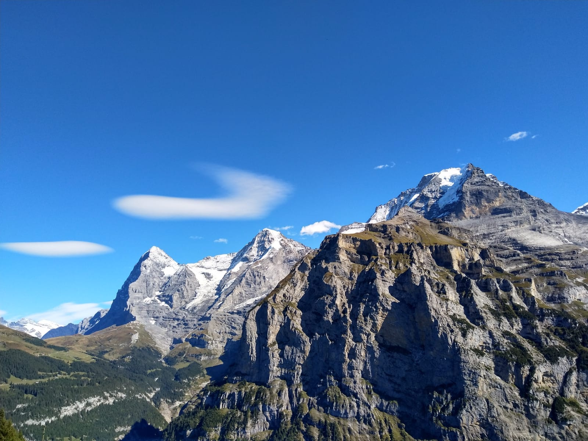
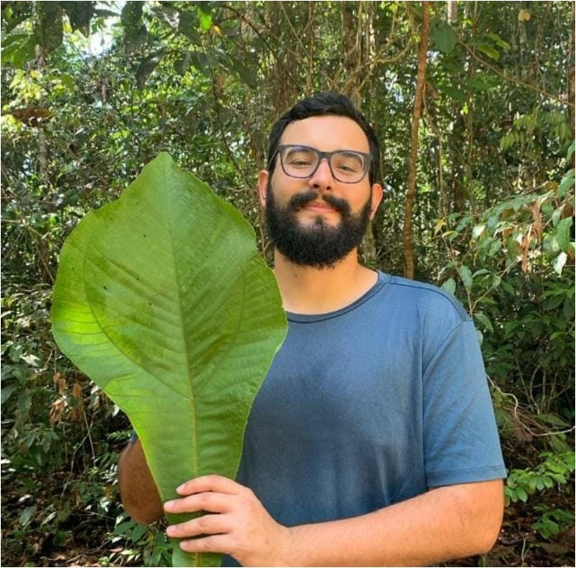

A mechanistic core
Our models build up from individual traits and metabolism (body size, foraging, movement) to predict how populations, food webs, and whole landscapes work and respond to change. The same bioenergetic core scales from a single patch to a spatially explicit meta-food-web.
landscape → meta-food-web of patches → food web within a patch
About the group
Network Ecology is a research group at the University of Bern, led by Remo Ryser. From February 2027 it becomes a division of the Institute of Ecology and Evolution. We study how networks of interacting species and networks of habitat patches in space form, move and change, and what this means for biodiversity and ecosystem functioning.
Our work is theory-led and mechanistic. We build models from individual traits and metabolism up to food webs and whole landscapes, and confront them with empirical data, from grassland experiments to movement data. Current themes include meta-food-webs and dispersal, biodiversity–ecosystem functioning, movement across scales, and the effects of artificial light at night.
The aim is to turn first-principles theory into forecasts that can inform real decisions in a changing world. We collaborate widely and are building a team of PhD students, postdocs and senior researchers (see People).

People
Remo Ryser
Develops mechanistic, trait-based models of food webs and spatial networks, from individual energetics up to meta-food-webs, to understand and forecast how biodiversity responds to change. Leads the group and is building the Network Ecology division in Bern.
food-web modelsmeta-food-websmovementALAN
Leonardo Espinosa
Investigating the context-dependency of biodiversity-ecosystem functioning (BEF) relationships, focusing on how the structure of multi-trophic networks and eutrophication shape these relationships. Combines empirical data from grassland experiments (PaNDiv) with bioenergetic food-web modelling to identify the mechanisms driving BEF variability, including trait-based plant-herbivore interaction networks and their response to nutrient enrichment.
BEFmulti-trophic networkseutrophicationThe group is growing. Two positions are coming up; details will be posted here and advertised through the usual channels.
PhD position
A PhD in the project Meta-networks on the theory of spatially coupled food webs: mechanistic, simulation-based models that link patches, dispersal and species interactions, with some restoration aspects. The position will be advertised soon.
food websspatial networkstheorySenior researcher / experienced postdoc
A senior research position for an experienced postdoc, expected to be advertised next year. Details will follow on this page.
Interested in joining as an MSc or BSc student, or in one of the positions above? Get in touch via the contact section below.
Selected publications
- Brose, U., Hirt, M. R., Ryser, R., Rosenbaum, B., Berti, E., Gauzens, B., Hein, A., Pawar, S., Schmidt, Wootton, K. L., & Kéfi, S. (2025). Embedding information flows within ecological networks. Nature Ecology & Evolution.
- Wilkinson, C., Brose, U., Dyer, A., Hirt, M., & Ryser, R. (2025). A mechanistic approach to animal dispersal — quantifying energetics and maximum distances. Ecology Letters, 28(2), e70085.
- Ryser, R., Hirt, M. R., Häussler, J., Gravel, D., & Brose, U. (2021). Landscape heterogeneity buffers biodiversity of simulated meta-food-webs under global change through rescue and drainage effects. Nature Communications, 12(1), 4716.
- Sanders, D., Hirt, M. R., Brose, U., Evans, D. M., Gaston, K. J., Gauzens, B., & Ryser, R. (2023). How artificial light at night may rewire ecological networks: concepts and models. Philosophical Transactions of the Royal Society B, 378(1892), 20220368.
- Ryser, R., Häussler, J., Stark, M., Brose, U., Rall, B. C., & Guill, C. (2019). The biggest losers: habitat isolation deconstructs complex food webs from top to bottom. Proceedings of the Royal Society B, 286(1908), 20191177.
- Knop, E., Zoller, L., Ryser, R., Gerpe, C., Hörler, M., & Fontaine, C. (2017). Artificial light at night as a new threat to pollination. Nature, 548(7666), 206–209.
Remo Ryser: Google Scholar · ORCID
What we work on
Biodiversity–ecosystem functioning in multitrophic metacommunities
How does biodiversity–ecosystem functioning (BEF) depend on multi-trophic interactions, eutrophication, and spatial processes? We combine empirical data from a large grassland experiment (PaNDiv) and alpine grasslands with bioenergetic food-web modelling to uncover the mechanisms behind BEF relationships, including trait-based plant-herbivore network structure, the interaction between food-web structure and nutrient availability, the role of space and movement, and how findings scale from experimental plots to real landscapes.
sMars — Synthesis of Movement Across Scales
Movement drives species interactions, community composition, and biodiversity patterns across scales, but the geographic scale of biodiversity research rarely matches the scale at which animals actually move. We are developing an empirically informed, unified concept of spatial scale and a mechanistic dispersal model grounded in energy budgets and metabolism, alongside a general movement database.
Meta-networks
Meta-networks develops a general theory of spatially coupled food webs. Building on our meta-food-web models and on the mechanistic, energy-based model of dispersal, it treats the network of habitat patches as an object of study in its own right: how does the structure of the spatial network shape the dynamics, persistence and functioning of the food webs living on it? The project applies network theory systematically to the spatial network and relates its structure to ecological outcomes.
Past
Artificial light at night (ALAN)
Fieldwork on how artificial light impairs plant-pollinator networks, followed by the EcoLux experiment on the iDiv EcoTron platform, measuring ecosystem-wide effects from soil microbes to plants and invertebrates. This work led to a thematic session at BES 2021 and a co-edited theme issue, "Light pollution in complex ecological systems," in Philosophical Transactions of the Royal Society B.
Get in touch
Network Ecology
Institute of Plant Sciences, University of Bern
Contact: Remo Ryser, group leader
remo.ryser@unibe.ch